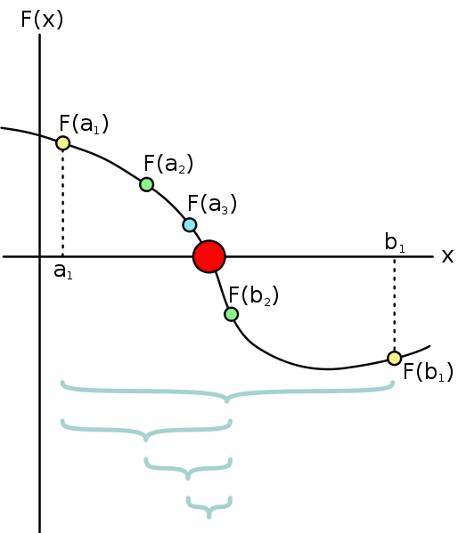
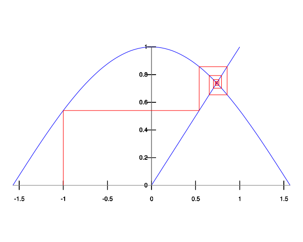

区間二分法(Half-Interval Method) とは連続関数 f に対して \(f(x) = 0\) の根を探す場合に有用な手法のひとつである.
2 点 a, b が \(f(a) < 0 < f(b)\) を満たす時, f は a と b との間に少なくとも 1 つの零点を持つ.
まず \(f(a) < 0\), \(0 < f(b)\) を満たす a, b を用意する. 二分法を繰り返し, ある許容誤差(T) より小さい時解とする.
図で示すように, このアルゴリズムのステップ数は,
解となる n 回目において, \(\frac{L}{2^n} = T\) が成り立つとすると, \(n = log \frac{L}{T}\) となり, ステップ数は a と b の差である L と許容誤差 T に依存することが分かる.
(define (search f neg-point pos-point)
(let ((midpoint (average neg-point pos-point)))
(if (close-enough? neg-point pos-point)
midpoint
(let ((test-value (f midpoint)))
(cond ((positive? test-value)
(search f neg-point midpoint))
((negative? test-value)
(search f midpoint pos-point))
(else midpoint))))))
search 手続きは, 引数に探索対象の関数 f と, a, b に相当する neg-point, pos-point を引数に受け取り, 解を返す.
ある x において \(f(x) = x\) を満たす時, x は f の不動点(Fixed-Point)と呼ぶ. 不動点の探索は, ある予測値をまず設定し, f を繰り返し作用させ値がある許容誤差以内になった値を解とする.
(define (fixed-point f first-guess)
(define (close-enough? v1 v2)
(< (abs (- v1 v2)) tolerance))
(define (try guess)
(let ((next (f guess)))
(if (close-enough? guess next)
next
(try next))))
(try first-guess))
fixed-point 手続きは, 引数に探索対象の関数 f と初期の予測値を引数に受け取り解を返す.
これを用いて, 例えば \(cos(x) = x\) となる x の値を (fixed-point cos 1.0) を計算することで求められる.
ここで, ある実数 a における平方根 \(\sqrt{a}\) を考えよう. \(\sqrt{a}\) とは, \(y^2 = a\) を満たす y の値を探すことと同意である.
即ち,
sqrt は以下のように定義でき, 手続きを追ってみる.
(define (sqrt x)
(fixed-point (lambda (y) (/ x y))
1.0))
無限ループになり解を導出できない.
この解決策として 平均緩和法(Average Damping) がある. 平均緩和法は予測値の大きな変化を防ぐことで, 解への逐次近似値を平均化する方法で, 不動点探索で収束を助ける有用な方法のひとつである.
(define (sqrt x)
(fixed-point (lambda (y) (average y (/ x y)))
1.0))
この手続きを追って見る.
次の予測値を \(f(x) = x\) を満たす x でなく, 予測値と \(f(x) = x\) の平均値にすることで無限ループを防いだ.
上の 2 つの例を用いながら, ある関数に対して目的の解を計算する為に, 引数として手続きが渡せる高階手続きを用いることで, 更に抽象度を上げプログラムの表現力を広げられることを示した.